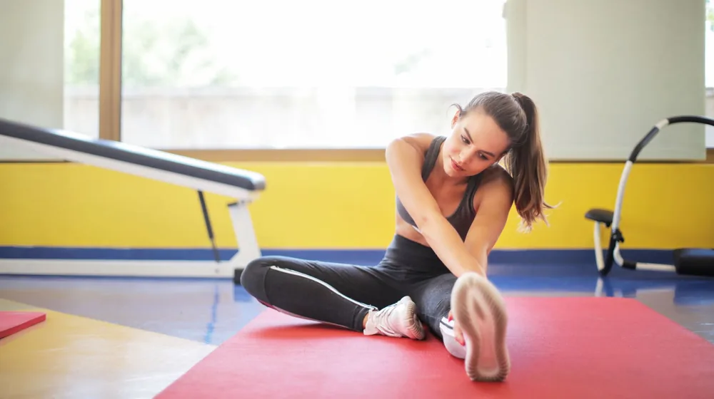

스트레칭 전 5가지 필수 체크리스트, 부상 없이 효과 높이는 비법
사진: Anastasia Shuraeva / Pexels (무료 이미지, 출처 표기)
스트레칭, 왜 준비 운동이 중요할까요?

스트레칭은 단순히 유연성을 기르는 것을 넘어, 운동 중 발생할 수 있는 부상을 예방하고 근육의 성능을 최적화하는 핵심적인 준비 과정입니다. 적절한 스트레칭은 혈액 순환을 촉진하고 관절의 가동 범위를 넓혀 본 운동의 효율을 높여줍니다.
하지만 제대로 준비되지 않은 상태에서 무리하게 스트레칭을 하면 오히려 근육이나 인대에 손상을 줄 수 있습니다. 따라서 스트레칭 전 자신의 몸 상태와 주변 환경을 점검하는 것은 매우 중요합니다.
스트레칭 전, 내 몸 상태 확인 필수 체크리스트
안전하고 효과적인 스트레칭을 위해 가장 먼저 자신의 몸 상태를 객관적으로 살펴보는 것이 중요합니다. 다음 항목들을 꼼꼼히 확인하고, 혹시라도 문제가 있다면 스트레칭 강도를 조절하거나 전문가와 상담하는 것이 좋습니다.
- 통증 유무: 현재 특정 부위에 통증이나 불편함이 있나요? 통증이 있다면 해당 부위 스트레칭은 피하거나 매우 약하게 진행합니다.
- 피로도: 전날 충분한 휴식을 취했나요? 몸이 너무 피곤하면 집중력이 떨어져 부상 위험이 커질 수 있습니다.
- 부상 이력: 과거에 다친 부위가 있다면 특히 주의하고, 무리한 동작은 하지 않습니다.
- 식사 및 수분 섭취: 스트레칭 전에 과식은 피하고, 충분한 수분을 섭취하여 근육이 탈수되지 않도록 합니다.
- 컨디션: 전반적인 몸 컨디션은 어떤가요? 몸이 경직되어 있다면 낮은 강도부터 시작하는 것이 좋습니다.
상황별 스트레칭 종류 선택 가이드
스트레칭은 목적과 시점에 따라 크게 '동적 스트레칭'과 '정적 스트레칭'으로 나뉩니다. 각 스트레칭의 특징을 이해하고 적절하게 활용하는 것이 중요합니다.
운동 전에는 동적 스트레칭으로 몸을 충분히 예열하고, 운동 후에는 정적 스트레칭으로 근육의 긴장을 풀어주는 것이 이상적인 조합입니다. 특정 운동 전문가들은 스트레칭 목적에 따라 이 두 가지를 적절히 혼합하여 활용할 것을 권장합니다.
더 안전하고 효과적인 스트레칭 환경 만들기
스트레칭 환경 또한 부상 예방과 효율적인 운동에 중요한 요소입니다. 스트레칭을 시작하기 전 다음 사항들을 점검해 보세요.
- 충분한 공간 확보: 스트레칭 동작 시 팔다리가 걸리거나 부딪히지 않도록 주변 공간을 충분히 확보합니다.
- 미끄럼 방지 매트 사용: 바닥이 미끄럽다면 요가 매트나 수건 등을 깔아 미끄럼을 방지하고 충격을 완화합니다.
- 적절한 온도와 습도: 너무 춥거나 더운 환경은 근육을 경직시키거나 쉽게 지치게 할 수 있습니다. 쾌적한 실내 온도를 유지하는 것이 좋습니다.
- 편안한 복장: 몸의 움직임을 방해하지 않고 통풍이 잘 되는 편안한 복장을 착용합니다.
초보자를 위한 스트레칭 주의사항과 올바른 자세
스트레칭 초보자라면 다음 주의사항을 숙지하고 올바른 자세를 유지하는 것이 중요합니다. 무리한 동작은 피하고 자신의 몸에 집중해야 합니다.
- 반동 금지: 반동을 주어 근육을 늘리려 하지 마세요. 오히려 근육을 손상시킬 수 있습니다. 천천히 부드럽게 늘려야 합니다.
- 통증 없는 범위: '시원하다'고 느껴지는 정도까지만 늘리고, 날카로운 통증이 느껴진다면 즉시 중단합니다.
- 호흡 조절: 스트레칭 중에는 자연스럽게 숨을 내쉬며 근육 이완에 집중합니다. 숨을 참으면 근육이 경직될 수 있습니다.
- 동작 유지 시간: 정적 스트레칭의 경우, 한 동작을 15초에서 30초가량 유지하는 것이 일반적입니다. (2026년 10월 기준)
- 좌우 균형: 특정 부위만 스트레칭하기보다 좌우 균형을 맞춰 양쪽을 모두 스트레칭합니다.
스트레칭, 이것만은 꼭 기억하세요!
스트레칭은 단순히 몸을 유연하게 만드는 것을 넘어, 부상을 예방하고 일상생활의 활력을 높이는 중요한 습관입니다. 오늘 안내해 드린 5가지 체크리스트를 통해 자신의 몸 상태와 스트레칭 환경을 점검하고, 올바른 방법으로 꾸준히 실천해 보세요.
특히 몸의 신호에 귀 기울이고 무리하지 않는 것이 가장 중요합니다. 꾸준하고 안전한 스트레칭으로 건강한 몸을 유지하시길 바랍니다. 정확한 사항은 공식 홈페이지나 해당 기관에서 다시 확인하시길 권장합니다.
🔗 이 글도 함께 보면 좋아요: 수면의 질 관리, 놓치면 후회할 5가지 핵심 체크리스트